scikit-笔记21:非监督学习-离群点检测
Table of Contents
- 1. outlier detection
- 1.1. Types of outlier detection setups
- 1.2. Anomaly detection with density estimation
- 1.2.1. Generating the data set
- 1.2.2. find the maximum likelihood KernelDensity model fit for train_data
- 1.2.3. compute the log-likelihood of each point in train_data
- 1.2.4. find the 95% cut point of all points' log-likelihood
- 1.2.5. create data points by
meshgrid - 1.2.6. draw the contour covering the points whose log-likelihood are 95% largest
- 1.3. now with One-Class SVM
- 1.3.1. drawbacks of density based estimation
- 1.3.2. one-class svm enter
- 1.3.3. what is outlier in SVM view
- 1.3.4. how to set the parameter 'nu'
- 1.3.5. output detection result
- 1.3.6. [Q] why we have so different contour function for the same problem
- 1.3.7. what is decision_function(), predict() in svm
- 1.3.8. draw the contour and outliers
- 1.3.9. how to get the outliers
- 1.3.10. how to get the support vectors
- 1.3.11. support vectors vs. outliers
- 1.3.12. EXERCISE
- 1.4. now with Isolation Forest
- 1.4.1. what is isolation forest and why does it work
- 1.4.2. build isolation forest model
- 1.4.3. EXERCISE
- 1.4.4. apply isolation forest on digits data set
- 1.4.4.1. The digits data set consists in images (8 x 8) of digits.
- 1.4.4.2. preview the digits image by
imshow - 1.4.4.3. flatten images before using as training data
- 1.4.4.4. focus on digit '5' images
- 1.4.4.5. find the 5% outliers: build model
- 1.4.4.6. find the 5% outliers: compute the abnormality by
decision_function - 1.4.4.7. find the 5% outliers: find the strongest inliers by
argsort - 1.4.4.8. find the 5% outliers: find the strongest outliers
- 1.4.5. EXERCISE
- 2. Misc tools
- 3. code snippet
- 4. scikit learn guide
- 4.1. 2.8. Density Estimation
- 4.1.1. 2.8.1. Density Estimation: Histograms
- 4.1.2. 2.8.2. Kernel Density Estimation
- 4.1.2.1. mathematical definition
- 4.1.2.2. what is a bandwidth in KDE
- 4.1.2.3. various kinds of Kernels
- 4.1.2.4. distance metrics of KDE
- 4.1.2.5. common applications of KDE: species density in South Amercican
- 4.1.2.6. common applications of KDE: generate digits based on given digits
- 4.1.2.7. Examples
- 4.2. Outlier detection with several methods
- 4.1. 2.8. Density Estimation
%matplotlib inline import warnings warnings.filterwarnings("ignore") import numpy as np import matplotlib import matplotlib.pyplot as plt
1 outlier detection
Anomaly detection is a machine learning task that consists in spotting so-called outliers.
“An outlier is an observation in a data set which appears to be inconsistent with the remainder of that set of data.” Johnson 1992
“An outlier is an observation which deviates so much from the other observations as to arouse suspicions that it was generated by a different mechanism.” Outlier/Anomaly Hawkins 1980
1.1 Types of outlier detection setups
- Supervised AD
- Labels available for both normal data and outlier
- Similar to rare class mining / imbalanced classification
- Semi-supervised AD (Novelty Detection)
- Only normal data available to train
- The algorithm learns on normal data only
- Unsupervised AD (Outlier Detection)
- no labels, training set = normal + abnormal data
- Assumption: anomalies are very rare
Let's first get familiar with different unsupervised anomaly detection approaches and algorithms. In order to visualise the output of the different algorithms we consider a toy data set consisting in a two-dimensional Gaussian mixture.
1.2 Anomaly detection with density estimation
1.2.1 Generating the data set
from sklearn.datasets import make_blobs X, y = make_blobs(n_features=2, centers=3, n_samples=500, random_state=42)
X.shape
(500, 2)
plt.figure() plt.scatter(X[:, 0], X[:, 1]) plt.show()
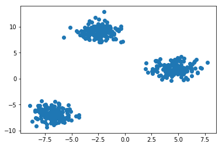
1.2.2 find the maximum likelihood KernelDensity model fit for train_data
kernel density is a normal pdf(probability density function).
By fit() we can find the maximum likelihood kernel density fn fit for this
'X' datasets
from sklearn.neighbors.kde import KernelDensity # Estimate density with a Gaussian kernel density estimator kde = KernelDensity(kernel='gaussian') kde = kde.fit(X) kde
KernelDensity(algorithm='auto', atol=0, bandwidth=1.0, breadth_first=True, kernel='gaussian', leaf_size=40, metric='euclidean', metric_params=None, rtol=0)
1.2.3 compute the log-likelihood of each point in train_data
kde_X = kde.score_samples(X) print(kde_X.shape) # contains the log-likelihood of all data points in 'X' on # this kde(some like pdf). The smaller it is ,The rarer is # the sample. https://www.youtube.com/watch?v=ddqny3aZNPY
1.2.4 find the 95% cut point of all points' log-likelihood
because the decision_function(or called value-function, compute the value of each point) of this kde is log-likelihood(point). So every decision_function value(can get by score_samples(point)) says something about the occurence probability of this point on this kde( or called pdf). For that reason, we can just keep the largest 95% score_samples(x) value
from scipy.stats.mstats import mquantiles alpha_set = 0.95 # what mquantiles method do is find the given percent(by ~prob~) largest # element of given list(by ~a~) tau_kde = mquantiles(kde_X, 1. - alpha_set) print ( tau_kde )
1.2.5 create data points by meshgrid
n_samples, n_features = X.shape X_range = np.zeros((n_features, 2)) # (2,2) #<- min value of each column(feature) in dataset # assign to first column of x_range # [[feature_1_min,_] # [feature_2_min,_]] X_range[:, 0] = np.min(X, axis=0) - 1. #<- max value of each column(feature) in dataset # assign to first column of x_range # [[feature_1_min,feature_1_max] # [feature_2_min,feature_2_max]] X_range[:, 1] = np.max(X, axis=0) + 1. h = 0.1 # step size of the mesh # compute [min, max] of each feature, to set the meshgrid range x_min, x_max = X_range[0] y_min, y_max = X_range[1] # meshgrid is some-like the full combination of two array # meshgrid([1,2], [3,4]) => list of array of array: [[1|,2], # [1|,2]] # [[3||,3], # [4||,4]] # you can create points by select one-axis value from 1st array, eg: 1, 1 # you can create points by select one-axis value from 2nd array, eg: 3, 4 # you get (1,3), (1,4) xx, yy= np.meshgrid(np.arange(x_min, x_max, h), np.arange(y_min, y_max, h)) # then you flatten xx and yy by ravel(), to get all x-values and y-values # finally, you stack all x-values and y-values on last axes after post-pended # which is the functionality of np.c_ grid = np.c_[xx.ravel(), yy.ravel()]
1.2.6 draw the contour covering the points whose log-likelihood are 95% largest
Z_kde = kde.score_samples(grid) # get the decision_function value of each point # here is the log-likelihood value of each point print(Z_kde) Z_kde = Z_kde.reshape(xx.shape) plt.figure() c_0 = plt.contour(xx, yy, Z_kde, levels=tau_kde, colors='red', linewidths=3) plt.clabel(c_0, inline=1, fontsize=15, fmt={tau_kde[0]: str(alpha_set)}) plt.scatter(X[:, 0], X[:, 1]) plt.legend() plt.show()
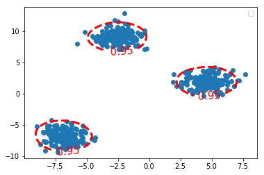
1.3 now with One-Class SVM
1.3.1 drawbacks of density based estimation
The problem of density based estimation is that they tend to become inefficient when the dimensionality of the data increase. It's the so-called curse of dimensionality that affects particularly density estimation algorithms. The one-class SVM algorithm can be used in such cases.
1.3.2 one-class svm enter
from sklearn.svm import OneClassSVM
1.3.3 what is outlier in SVM view
three kinds of outliers from near to far:
- support vector(on the fat margin)
- in the fat margin
- on the wrong side
All the ourliers have a same property:
\(\theta^T \cdot \textbf{X} + b \leq 1\), that is svm_model.predict(x) = -1
. . (1) (2) (3) (3) . | . .. | . .. | . .. | . .. . | \ ….. | \ ….. | \ ….. | \ ….. . | \ . … | \ . … | \ . … | \ . … . | \ \ \ | \ \ .\ | \ \ \ | \ \ \ . | \ \ \ | \ \ \ | \ .\ \ | .\ \ \ . | *\ \ \ | *\ \ \ | *\ \ \ | *\ \ \ . | * * \ | * * \ | * * \ | * * \ . ------–—----–— ------–—----–— ------–—----–— ------–—----–— . | | | | .
near: SVs can also be seen as outliers, because they must lie on the edge of a group, otherwise they'll not be support vectors.
farther: on the right side in the fat margin
farthest: on the wrong side(inside or outside the margin)

如果要分对所有点，由于 on the wrong side 离群点的存在，我们将无法构造出能将数据分开的超平面来.

用黑圈圈起来的那个蓝点是一个离群点，它偏离了自己原本所应该在的那个半空间，如果直接忽略掉它的话，原来的分隔超平面还是挺好的，但是由于这个离群点的出现，导致分隔超平面不得不被挤歪了，变成途中黑色虚线所示，同时间隔也相应变小了。当然，更严重的情况是，如果这个离群点再往右上移动一些距离的话，我们将无法构造出能将数据分开的超平面来。
1.3.4 how to set the parameter 'nu'
nu = 0.05 # upper bound of the fraction of outliers
nu = 0.05 # upper bound of the fraction of outliers ocsvm = OneClassSVM( kernel='rbf', gamma=0.05, nu=nu) ocsvm.fit(X)
OneClassSVM(cache_size=200, coef0=0.0, degree=3, gamma=0.05, kernel='rbf', max_iter=-1, nu=0.05, random_state=None, shrinking=True, tol=0.001, verbose=False)
1.3.5 output detection result
# because this is one-class svm, so just this class or NOT this class # 1: this class # -1: NOT this class X_outliers = X[ocsvm.predict(X) == -1]
1.3.6 [Q] why we have so different contour function for the same problem
c_0 = plt.contour(xx, yy, Z_ocsvm, levels=[0], colors='red', linewidths=3) c_0 = plt.contour(xx, yy, Z_kde, levels=tau_kde, colors='red', linewidths=3)
Note that, in order to draw z-axes based on x and y, we should have a function of x and y, this function :
- in one-class-svm is called
ocsvm_model.decision_function(point) - in KDE is called
kde_model.score_samples(point)
they both say the same thing: z-value(the new created axis) of contour
for one-class-SVM:
*we set concern region(the 95% nearest points against to the separating hyperplane) in SVM model, so levels(decision_function value) of contour is 0*
we give the svm model parameter 'nu' 0.05
nu = 0.05 # upper bound of the fraction of outliers
ocsvm = OneClassSVM(kernel='rbf', gamma=0.05, nu=nu) # setup nu of the SVM
c_0 = plt.contour(xx, yy, Z_ocsvm, levels=[0], colors='red', linewidths=3)
parameter 'levels' of this contour of SVM:
0is the point on the separating hyperplane.<0is the point on the wrong side of separating hyperplane, here is NOT belong this class>0is the point on the right side ofseparating hyperplane, here is belong this class
The value we assign to parameter of contour(): levels, is the value of
decision_function, because we here use one-class-svm, so all points with
negative decision function value are the wrong predicted points, and because
we set SVM model parameter 'nu'=0.05, so this model will only guarantee the
decision_fn value of points who has the 95% shortest distance larger than 0.
for KDE:
*no parameter about concern region in KDE we can set, but the z-value(log-likelihood of this sample on certain kde, can be computed by score_samples(point)) it self says some thing about the occurence probability, so we order them and keep the largest 95%, and set the 5% z-value in ordered z-value list as the levels of contour*
we give the percent(of largest of z-value) we want to keep to 'alpha_set'
alpha_set = 0.95 tau_kde = mquantiles(kde_X, 1. - alpha_set)
we compute the levels: tau_kde c_0 = plt.contour(xx, yy, Z_kde, levels=tau_kde, colors='red', linewidths=3)
1.3.7 what is decision_function(), predict() in svm
decision_function:
\(\theta^T \cdot \textbf{X} + b\)
1.3.8 draw the contour and outliers
Z_ocsvm = ocsvm.decision_function(grid) # Signed distance to the separating hyperplane. Z_ocsvm = Z_ocsvm.reshape(xx.shape) plt.figure() c_0 = plt.contour(xx, yy, Z_ocsvm, levels=[0], colors='red', linewidths=3) # note that, we take contour obj as parameter of clabel. plt.clabel(c_0, inline=1, fontsize=15, fmt={0: str(alpha_set)}) # draw clabel '0.95' plt.scatter(X[:, 0], X[:, 1]) plt.scatter(X_outliers[:, 0], X_outliers[:, 1], color='red') plt.legend() plt.show()
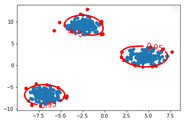
1.3.9 how to get the outliers
- one-class svm obj
- model with specifying threshold percentage 'nu'
- collect the -1 labeled data point X[svm_model.predict(x) == -1]
1.3.10 how to get the support vectors
The so-called support vectors of the one-class SVM form the outliers
X_SV = X[ocsvm.support_] # support_ attr will return indices of the support # vectors, then we can get it by index it in dataset print (ocsvm.decision_function(X_SV)) print (ocsvm.decision_function(X_outliers)) print (X_outliers.shape) print (X_SV.shape) n_SV = len(X_SV) n_outliers = len(X_outliers) print('{0:.2f} <= {1:.2f} <= {2:.2f}?'.format(1./n_samples*n_outliers, nu, 1./n_samples*n_SV))
Only the support vectors are involved in the decision function of the One-Class SVM.
- Plot the level sets of the One-Class SVM decision function as we did for the true density.
Emphasize the Support vectors.
fig, axes = plt.subplots(nrows = 1, ncols=2, figsize=(10,5)) axes[0].contourf(xx, yy, Z_ocsvm, 10, cmap=plt.cm.Blues_r) axes[1].contourf(xx, yy, Z_ocsvm, 10, cmap=plt.cm.Blues_r) axes[0].contour(xx, yy, Z_ocsvm, levels=[0], color= 'red', linewidths=3) axes[0].scatter(X[:, 0], X[:, 1], s=1.) axes[1].scatter(X[:, 0], X[:, 1], s=1.) axes[0].scatter(X_SV[:, 0], X_SV[:, 1], color='orange') # plot the SVs axes[1].plot(X_outliers[:, 0], X_outliers[:, 1], 'or') # plot the outliers plt.show()
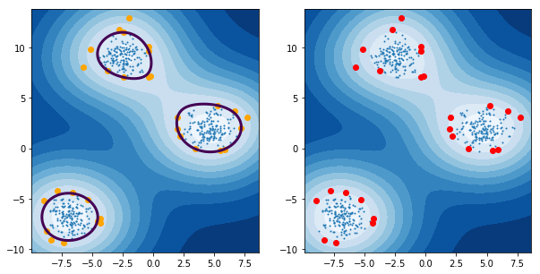
1.3.11 support vectors vs. outliers
- support vectors: the point just lie on the fat margin
- outliers: only satisfying both two conditions we can call it outlier
- the point is true + / - label, but on predicted - / + side
- the point whose decision function value lie outside of the 95% cut points of all data points <<< this note use this as evidence to judge whether or not a outlier
1.3.12 EXERCISE
- Change the gamma parameter and see it's influence on the smoothness of the decision function.
1.4 now with Isolation Forest
1.4.1 what is isolation forest and why does it work
Isolation Forest is an anomaly detection algorithm based on trees. The algorithm builds a number of random trees and the rationale is that if a sample is isolated it should alone in a leaf after very few random splits. Isolation Forest builds a score of abnormality based the depth of the tree at which samples end up.
1.4.2 build isolation forest model
from sklearn.ensemble import IsolationForest
iforest = IsolationForest(n_estimators=300, contamination=0.10) iforest = iforest.fit(X)
Z_iforest = iforest.decision_function(grid) Z_iforest = Z_iforest.reshape(xx.shape) plt.figure() c_0 = plt.contour(xx, yy, Z_iforest, levels=[iforest.threshold_], colors='red', linewidths=3) plt.clabel(c_0, inline=1, fontsize=15, fmt={iforest.threshold_: str(alpha_set)}) plt.scatter(X[:, 0], X[:, 1], s=1.) plt.legend() plt.show()
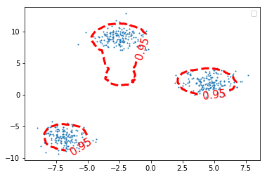
1.4.3 EXERCISE
EXERCISE: Illustrate graphically the influence of the number of trees on the smoothness of the decision function?
1.4.4 apply isolation forest on digits data set
We will now apply the IsolationForest algorithm to spot digits written in an unconventional way.
from sklearn.datasets import load_digits digits = load_digits()
1.4.4.1 The digits data set consists in images (8 x 8) of digits.
images = digits.images labels = digits.target images.shape
(1797, 8, 8)
1.4.4.2 preview the digits image by imshow
i = 102 plt.figure(figsize=(2, 2)) plt.title('{0}'.format(labels[i])) plt.axis('off') plt.imshow(images[i], cmap=plt.cm.gray_r, interpolation='nearest') plt.show()
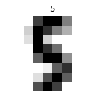
1.4.4.3 flatten images before using as training data
To use the images as a training set we need to flatten the images.
n_samples = len(digits.images) data = digits.images.reshape((n_samples, -1))
data.shape
(1797, 64)
X = data y = digits.target
X.shape
(1797, 64)
1.4.4.4 focus on digit '5' images
Let's focus on digit 5.
X_5 = X[y == 5]
X_5.shape
(182, 64)
fig, axes = plt.subplots(1, 5, figsize=(10, 4)) for ax, x in zip(axes, X_5[:5]): img = x.reshape(8, 8) # reshape to a matrix and imshow will map each # element of matrix directly into image with pixels # of same location ax.imshow(img, cmap=plt.cm.gray_r, interpolation='nearest') ax.axis('off')
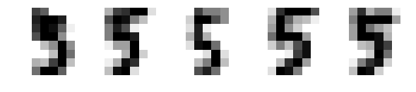
1.4.4.5 find the 5% outliers: build model
- Let's use IsolationForest to find the top 5% most abnormal images.
Let's plot them !
from sklearn.ensemble import IsolationForest iforest = IsolationForest(contamination=0.05) iforest = iforest.fit(X_5)
1.4.4.6 find the 5% outliers: compute the abnormality by decision_function
Compute the level of "abnormality" with iforest.decision_function. The lower, the more abnormal.
iforest_X = iforest.decision_function(X_5)
plt.hist(iforest_X);
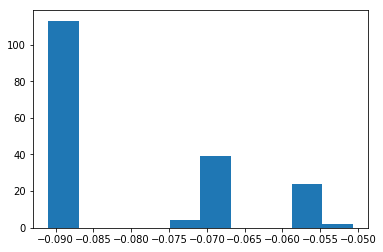
1.4.4.7 find the 5% outliers: find the strongest inliers by argsort
Let's plot the strongest inliers
X_strong_inliers = X_5[np.argsort(iforest_X)[-10:]] # the lower the abnormal # the larger the normal # the most normal is tail of argsort fig, axes = plt.subplots(2, 5, figsize=(10, 5)) for i, ax in zip(range(len(X_strong_inliers)), axes.ravel()): ax.imshow(X_strong_inliers[i].reshape((8, 8)), cmap=plt.cm.gray_r, interpolation='nearest') ax.axis('off')
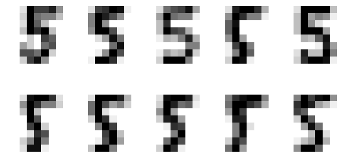
1.4.4.8 find the 5% outliers: find the strongest outliers
Let's plot the strongest outliers
fig, axes = plt.subplots(2, 5, figsize=(10, 5)) X_outliers = X_5[iforest.predict(X_5) == -1] for i, ax in zip(range(len(X_outliers)), axes.ravel()): ax.imshow(X_outliers[i].reshape((8, 8)), cmap=plt.cm.gray_r, interpolation='nearest') ax.axis('off')
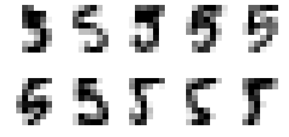
1.4.5 EXERCISE
EXERCISE: Rerun the same analysis with all the other digits
2 Misc tools
2.1 scikit-learn
2.1.1 ML models by now
- from sklearn.datasets import make_blobs
- from sklearn.datasets import make_moons
- from sklearn.datasets import make_circles
- from sklearn.datasets import make_s_curve
- from mpl_toolkits.mplot3d import Axes3D
- from sklearn.datasets import make_regression
- from sklearn.datasets import load_iris
- from sklearn.datasets import load_digits
- from sklearn.datasets import load_breast_cancer
- from sklearn.model_selection import train_test_split
- from sklearn.model_selection import cross_val_score
- from sklearn.model_selection import KFold
- from sklearn.model_selection import StratifiedKFold
- from sklearn.model_selection import ShuffleSplit
- from sklearn.model_selection import GridSearchCV
- from sklearn.model_selection import learning_curve
- from sklearn.feature_extraction import DictVectorizer
- from sklearn.feature_extraction.text import CountVectorizer
- from sklearn.feature_extraction.text import TfidfVectorizer
- from sklearn.feature_selection import SelectPercentile
- from sklearn.feature_selection import f_classif
- from sklearn.feature_selection import f_regression
- from sklearn.feature_selection import chi2
- from sklearn.feature_selection import SelectFromModel
- from sklearn.feature_selection import RFE
- from sklearn.linear_model import LogisticRegression
- from sklearn.linear_model import LinearRegression
- from sklearn.linear_model import Ridge
- from sklearn.linear_model import Lasso
- from sklearn.linear_model import ElasticNet
- from sklearn.neighbors import KNeighborsClassifier
- from sklearn.neighbors import KNeighborsRegressor
- from sklearn.neighbors.kde import KernelDensity *
- from sklearn.preprocessing import StandardScaler
- from sklearn.metrics import confusion_matrix, accuracy_score
- from sklearn.metrics import adjusted_rand_score
- from sklearn.metrics.scorer import SCORERS
- from sklearn.metrics import r2_score
- from sklearn.cluster import KMeans
- from sklearn.cluster import KMeans
- from sklearn.cluster import MeanShift
- from sklearn.cluster import DBSCAN # <<< this algorithm has related sources in LIHONGYI's lecture-12
- from sklearn.cluster import AffinityPropagation
- from sklearn.cluster import SpectralClustering
- from sklearn.cluster import Ward
- from sklearn.cluster import DBSCAN
- from sklearn.cluster import AgglomerativeClustering
- from scipy.cluster.hierarchy import linkage
- from scipy.cluster.hierarchy import dendrogram
- from scipy.stats.mstats import mquantiles
- from sklearn.metrics import confusion_matrix
- from sklearn.metrics import accuracy_score
- from sklearn.metrics import adjusted_rand_score
- from sklearn.metrics import classification_report
- from sklearn.preprocessing import Imputer
- from sklearn.dummy import DummyClassifier
- from sklearn.pipeline import make_pipeline
- from sklearn.svm import LinearSVC
- from sklearn.svm import SVC
- from sklearn.svm import OneClassSVM *
- from sklearn.tree import DecisionTreeRegressor
- from sklearn.ensemble import RandomForestClassifier
- from sklearn.ensemble import GradientBoostingRegressor
- from sklearn.ensemble import IsolationForest
- from sklearn.decomposition import PCA
- from sklearn.manifold import TSNE
- from sklearn.manifold import Isomap
2.1.2 OneClassSVM
Unsupervised Outlier Detection.
Estimate the support of a high-dimensional distribution.
The implementation is based on libsvm.
OneClassSVM(kernel=’rbf’,
degree=3,
gamma=’auto’, # Kernel coefficient for ‘rbf’, ‘poly’ and ‘sigmoid’.
# If gamma is ‘auto’ then 1/n_features will be used
# instead.
coef0=0.0, # Independent term in kernel function. It is only
# significant in ‘poly’ and ‘sigmoid’.
tol=0.001,
nu=0.5, # An upper bound on the fraction of training errors
# and a lower bound of the fraction of support
# vectors
shrinking=True, # Whether to use the shrinking heuristic.
cache_size=200, # Specify the size of the kernel cache (in MB)
verbose=False,
max_iter=-1,
random_state=None)
attributes:
support_ : array-like, shape = [n_SV].
Indices of support vectors.
support_vectors_ : array-like, shape = [nSV, n_features].
Support vectors.
dual_coef_ : array, shape = [1, n_SV].
Coefficients of the support vectors in the decision function.
coef_ : array, shape = [1, n_features]
Weights assigned to the features (coefficients in the primal problem). This is only available in the case of a linear kernel. coef_ is readonly property derived from dual_coef_ and support_vectors_
intercept_ : array, shape = [1,]
Constant in the decision function.
2.2 Numpy
2.2.1 np.c_
- last axis
- upgrade to at least 2-D
- 1's post-pend
Translates slice objects to concatenation along the second axis.
This is short-hand for np.r_['-1,2,0', index expression], which is useful
because of its common occurrence. In particular, arrays will be stacked
along their last axis after being upgraded to at least 2-D with 1’s
post-pended (3,) –> (3,1) to the shape (column vectors made out of 1-D arrays).
import numpy as np np.c_[np.array([1,2,3]), np.array([4,5,6])] # (3,) post-pended to (3,1) # [1,2,3] post-pended to [[1], [[4, # [4,5,6] [2], [5], # [3]] [6]] # then do: # | | | # | | | # | | |
array([[1, 4], [2, 5], [3, 6]])
np.c_[np.array([ [1,2,3] ]), 0, 0, np.array([ [4,5,6] ])] # (1,3) dont need to append # (1,) append to (1,1) # then do: # | | | # | | | # | | |
array([[1, 2, 3, 0, 0, 4, 5, 6]])
2.2.2 np.r_
- first axis
- upgrade to at least 2-D
- 1's post-pend
stack in unit of first axes, that is row in common case.
np.r_[np.array([ [1,2,3] ]), np.array([ [4,5,6] ])]
array([[1, 2, 3], [4, 5, 6]])
2.3 Scipy
2.3.1 scipy.stats.mstats.mquantiles
what mquantiles method do is find the given percent(by prob) largest
element of given list(by a)
mquantiles(a, #<- array-like, input data prob=[0.25, 0.5, 0.75], #<- list of quantiles to compute alphap=0.4, #<- plotting position parameter betap=0.4, #<- plotting position parameter axis=None, #<- axis along which to perform trimming limit=() )
Computes empirical quantiles for a data array.
2.4 Statistics
2.4.1 TODO quantiles in statistics
Not 1/4, but cut points.
https://www.wikiwand.com/en/Quantile
In statistics and probability quantiles are cut points dividing the range of a probability distribution into contiguous intervals with equal probabilities, or dividing the observations in a sample in the same way.

In above image, 3 quantiles(cut points): Q1, Q2, Q3, create 4 probability-equal region ==> 1/4, each region has 25% probability
if you have 2 quantiles, they will create 3 probability-equal region ===> 1/3, each region has 33.3333% probability if you have 1 quantiles, they will create 2 probability-equal region ===> 1/2, each region has 50% probability
2.5 Matplotlib
2.5.1 module by now
from mpl_toolkits.mplot3d import Axes3D *
2.5.2 plt.contour
Note that, what we assign to levels, is the Z_ocsvm or Z_kde or Z_iforest's value, which is computed by decision_function(xx, yy)
c_0 = plt.contour(xx, yy, Z_ocsvm, levels=[0], colors='red', linewidths=3) c_0 = plt.contour(xx, yy, Z_kde, levels=tau_kde, colors='red', linewidths=3)
2.5.3 plt.contourf
contour() draw contour lines
Z_ocsvm = ocsvm.decision_function(grid) # Signed distance to the separating hyperplane. Z_ocsvm = Z_ocsvm.reshape(xx.shape) plt.figure() c_0 = plt.contour(xx, yy, Z_ocsvm, levels=[0], colors='red', linewidths=3) # note that, we take contour obj as parameter of clabel. plt.clabel(c_0, inline=1, fontsize=15, fmt={0: str(alpha_set)}) # draw clabel '0.95' plt.scatter(X[:, 0], X[:, 1]) plt.scatter(X_outliers[:, 0], X_outliers[:, 1], color='red') plt.legend() plt.show()
contourf() draw filled contours
fig, axes = plt.subplots(nrows = 1, ncols=2, figsize=(10,5)) axes[0].contourf(xx, yy, Z_ocsvm, 10, cmap=plt.cm.Blues_r) axes[1].contourf(xx, yy, Z_ocsvm, 10, cmap=plt.cm.Blues_r) axes[0].scatter(X[:, 0], X[:, 1], s=1.) axes[1].scatter(X[:, 0], X[:, 1], s=1.) axes[0].scatter(X_SV[:, 0], X_SV[:, 1], color='orange') # plot the SVs axes[1].plot(X_outliers[:, 0], X_outliers[:, 1], 'or') # plot the outliers plt.show()
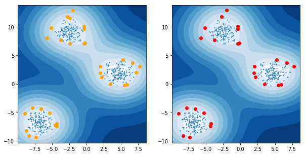
3 code snippet
3.1 how to draw one digt in one subplot
from sklearn.datasets import load_digits digits = load_digits() fig, axes = plt.subplots(2, 5, figsize=(10, 5), subplot_kw={'xticks':(), 'yticks': ()}) for ax, img in zip(axes.ravel(), digits.images): ax.imshow(img, interpolation="none", cmap="gray")
3.2 how to generate 2-d points with 3 cluster
from sklearn.datasets import make_blobs X, y = make_blobs(n_features=2, centers=3, n_samples=500, random_state=42)
4 scikit learn guide
4.1 2.8. Density Estimation
https://www.youtube.com/watch?v=gPWsDh59zdo

we put weight '1' (in bold font) on observations in the same bin, and '0' otherwise;
but kernel density puts continuous weight that's decreasing the further we move away from the the point 'x' (in red font color)

KDE has the same intuition sense that it's an average: divide by b(bandwidth). KDE is kind of the equivalent of the width of the bins of the Kernel function.
Kernel function weighs observations differently depending on how far away they are from the point x( the one we're evaluating in f(x) ): \((x_i - x)\), so we sum over all observations.
one of the kernel function is Gaussian density — the PDF of the normal.
lower bandwidth, overfitting, unsmooth, variance with many peaks, so our predict PDF showed here moves from up and down too much

larger bandwidth, underfitting, smooth, bias with only ONE peak

normal bandwidth, similar to true distribution, with two peak

Density estimation walks the line between unsupervised learning, feature engineering, and data modeling. Some of the most popular and useful density estimation techniques are mixture models such as Gaussian Mixtures (sklearn.mixture.GaussianMixture), and neighbor-based approaches such as the kernel density estimate (sklearn.neighbors.KernelDensity). Gaussian Mixtures are discussed more fully in the context of clustering, because the technique is also useful as an unsupervised clustering scheme.
Density estimation is a very simple concept, and most people are already familiar with one common density estimation technique: the histogram.
4.1.1 2.8.1. Density Estimation: Histograms
A histogram is a simple visualization of data where bins are defined, and the number of data points within each bin is tallied. An example of a histogram can be seen in the upper-left panel of the following figure:

A major problem with histograms, however, is that the choice of binning can have a disproportionate effect on the resulting visualization.
Consider the upper-right panel of the above figure. It shows a histogram over the same data, with the bins shifted right. The results of the two visualizations look entirely different, and might lead to different interpretations of the data.
Intuitively, one can also think of a histogram as a stack of blocks, one block per point. By stacking the blocks in the appropriate grid space, we recover the histogram.
But what if, instead of stacking the blocks on a regular grid, we center each block on the point it represents, and sum the total height at each location? This idea leads to the lower-left visualization. It is perhaps not as clean as a histogram, but the fact that the data drive the block locations mean that it is a much better representation of the underlying data.
This visualization is an example of a kernel density estimation, in this case with a top-hat kernel (i.e. a square block at each point). We can recover a smoother distribution by using a smoother kernel. The bottom-right plot shows a Gaussian kernel density estimate, in which each point contributes a Gaussian curve to the total. The result is a smooth density estimate which is derived from the data, and functions as a powerful non-parametric model of the distribution of points.
4.1.2 2.8.2. Kernel Density Estimation
Kernel density estimation in scikit-learn is implemented in the
sklearn.neighbors.KernelDensity estimator, which uses the Ball Tree or KD
Tree for efficient queries (see Nearest Neighbors for a discussion of these).
Though the above example uses a 1D data set for simplicity, kernel density estimation can be performed in any number of dimensions, though in practice the curse of dimensionality causes its performance to degrade in high dimensions.
In the following figure, 100 points are drawn from a bimodal distribution, and the kernel density estimates are shown for three choices of kernels:

It’s clear how the kernel shape affects the smoothness of the resulting distribution. The scikit-learn kernel density estimator can be used as follows:
>>> from sklearn.neighbors.kde import KernelDensity >>> import numpy as np >>> X = np.array([[-1, -1], [-2, -1], [-3, -2], [1, 1], [2, 1], [3, 2]]) >>> kde = KernelDensity(kernel='gaussian', bandwidth=0.2).fit(X) >>> kde.score_samples(X) array([-0.41075698, -0.41075698, -0.41076071, -0.41075698, -0.41075698, -0.41076071])
4.1.2.1 mathematical definition
Here we have used kernel='gaussian', as seen above. Mathematically, a kernel
is a positive function K(x;h) which is controlled by the bandwidth parameter
h. Given this kernel form, the density estimate at a point y within a group
of points \(x_i; i=1\cdots N\) is given by:
\(\rho_K(y) = \sum_{i=1}^{N} K((y - x_i) / h)\)
4.1.2.2 what is a bandwidth in KDE
The bandwidth here acts as a smoothing parameter, controlling the tradeoff between bias and variance in the result.
- large bandwidth leads to a very smooth (i.e. high-bias) density distribution.
- small bandwidth leads to an unsmooth (i.e. high-variance) density distribution.
sklearn.neighbors.KernelDensity implements several common kernel forms, which
are shown in the following figure:

4.1.2.3 various kinds of Kernels
The form of these kernels is as follows:
Gaussian kernel (kernel = 'gaussian')
\(K(x; h) \propto \exp(- \frac{x^2}{2h^2} )\)
Tophat kernel (kernel = 'tophat')
\(K(x; h) \propto 1 if x < h\)
Epanechnikov kernel (kernel = 'epanechnikov')
\(K(x; h) \propto 1 - \frac{x^2}{h^2}\)
Exponential kernel (kernel = 'exponential')
\(K(x; h) \propto \exp(-x/h)\)
Linear kernel (kernel = 'linear')
\(K(x; h) \propto 1 - x/h if x < h\)
Cosine kernel (kernel = 'cosine')
\(K(x; h) \propto \cos(\frac{\pi x}{2h}) if x < h\)
4.1.2.4 distance metrics of KDE
The kernel density estimator can be used with any of the valid distance
metrics (see sklearn.neighbors.DistanceMetric for a list of available
metrics), though the results are properly normalized only for the Euclidean
metric. One particularly useful metric is the Haversine distance which measures
the angular distance between points on a sphere.
4.1.2.5 common applications of KDE: species density in South Amercican
Here is an example of using a kernel density estimate for a visualization of geospatial data, in this case the distribution of observations of two different species on the South American continent:

4.1.2.6 common applications of KDE: generate digits based on given digits
One other useful application of kernel density estimation is to learn a non-parametric generative model of a dataset in order to efficiently draw new samples from this generative model. Here is an example of using this process to create a new set of hand-written digits, using a Gaussian kernel learned on a PCA projection of the data:

The “new” data consists of linear combinations of the input data, with weights probabilistically drawn given the KDE model.
4.1.2.7 Examples
Simple 1D Kernel Density Estimation: computation of simple kernel density estimates in one dimension.
Kernel Density Estimation: an example of using Kernel Density estimation to learn a generative model of the hand-written digits data, and drawing new samples from this model.
Kernel Density Estimate of Species Distributions: an example of Kernel Density estimation using the Haversine distance metric to visualize geospatial data
4.2 Outlier detection with several methods
4.2.1 4 general methods to do outliers detection
When the amount of contamination is known, this example illustrates three different ways of performing Novelty and Outlier Detection:
- based on a robust estimator of covariance, which is assuming that the data are Gaussian distributed and performs better than the One-Class SVM in that case.
- using the One-Class SVM and its ability to capture the shape of the data set, hence performing better when the data is strongly non-Gaussian, i.e. with two well-separated clusters;
- using the Isolation Forest algorithm, which is based on random forests and hence more adapted to large-dimensional settings, even if it performs quite well in the examples below.
- using the Local Outlier Factor to measure the local deviation of a given data point with respect to its neighbors by comparing their local density.
svm.OneClassSVM(nu=0.95 * outliers_fraction + 0.05, kernel="rbf", gamma=0.1)
EllipticEnvelope(contamination=outliers_fraction)
IsolationForest(max_samples=n_samples, contamination=outliers_fraction, random_state=rng)
LocalOutlierFactor(n_neighbors=35, contamination=outliers_fraction)
4.2.2 performance illustration of 4 general methods
The ground truth about inliers and outliers is given by the points colors while the orange-filled area indicates which points are reported as inliers by each method.
Here, we assume that we know the fraction of outliers in the datasets. Thus rather than using the ‘predict’ method of the objects, we set the threshold on the decision_function to separate out the corresponding fraction.


4.2.3 code snippet
import numpy as np from scipy import stats import matplotlib.pyplot as plt import matplotlib.font_manager from sklearn import svm from sklearn.covariance import EllipticEnvelope from sklearn.ensemble import IsolationForest from sklearn.neighbors import LocalOutlierFactor print(__doc__) rng = np.random.RandomState(42) # Example settings n_samples = 200 outliers_fraction = 0.25 clusters_separation = [0, 1, 2] # define two outlier detection tools to be compared classifiers = { "One-Class SVM": svm.OneClassSVM(nu=0.95 * outliers_fraction + 0.05, kernel="rbf", gamma=0.1), "Robust covariance": EllipticEnvelope(contamination=outliers_fraction), "Isolation Forest": IsolationForest(max_samples=n_samples, contamination=outliers_fraction, random_state=rng), "Local Outlier Factor": LocalOutlierFactor( n_neighbors=35, contamination=outliers_fraction)} # Compare given classifiers under given settings xx, yy = np.meshgrid(np.linspace(-7, 7, 100), np.linspace(-7, 7, 100)) n_inliers = int((1. - outliers_fraction) * n_samples) n_outliers = int(outliers_fraction * n_samples) ground_truth = np.ones(n_samples, dtype=int) ground_truth[-n_outliers:] = -1 # Fit the problem with varying cluster separationfor i, offset in enumerate(clusters_separation): np.random.seed(42) # Data generation X1 = 0.3 * np.random.randn(n_inliers // 2, 2) - offset X2 = 0.3 * np.random.randn(n_inliers // 2, 2) + offset X = np.r_[X1, X2] # Add outliers X = np.r_[X, np.random.uniform(low=-6, high=6, size=(n_outliers, 2))] # Fit the model plt.figure(figsize=(9, 7)) for i, (clf_name, clf) in enumerate(classifiers.items()): # fit the data and tag outliers if clf_name == "Local Outlier Factor": y_pred = clf.fit_predict(X) scores_pred = clf.negative_outlier_factor_ else: clf.fit(X) scores_pred = clf.decision_function(X) y_pred = clf.predict(X) threshold = stats.scoreatpercentile(scores_pred, 100 * outliers_fraction) n_errors = (y_pred != ground_truth).sum() # plot the levels lines and the points if clf_name == "Local Outlier Factor": # decision_function is private for LOF Z = clf._decision_function(np.c_[xx.ravel(), yy.ravel()]) else: Z = clf.decision_function(np.c_[xx.ravel(), yy.ravel()]) Z = Z.reshape(xx.shape) subplot = plt.subplot(2, 2, i + 1) subplot.contourf(xx, yy, Z, levels=np.linspace(Z.min(), threshold, 7), cmap=plt.cm.Blues_r) a = subplot.contour(xx, yy, Z, levels=[threshold], linewidths=2, colors='red') subplot.contourf(xx, yy, Z, levels=[threshold, Z.max()], colors='orange') b = subplot.scatter(X[:-n_outliers, 0], X[:-n_outliers, 1], c='white', s=20, edgecolor='k') c = subplot.scatter(X[-n_outliers:, 0], X[-n_outliers:, 1], c='black', s=20, edgecolor='k') subplot.axis('tight') subplot.legend( [a.collections[0], b, c], ['learned decision function', 'true inliers', 'true outliers'], prop=matplotlib.font_manager.FontProperties(size=10), loc='lower right') subplot.set_xlabel("%d. %s (errors: %d)" % (i + 1, clf_name, n_errors)) subplot.set_xlim((-7, 7)) subplot.set_ylim((-7, 7)) plt.subplots_adjust(0.04, 0.1, 0.96, 0.94, 0.1, 0.26) plt.suptitle("Outlier detection") plt.show()
Total running time of the script: ( 0 minutes 2.847 seconds)